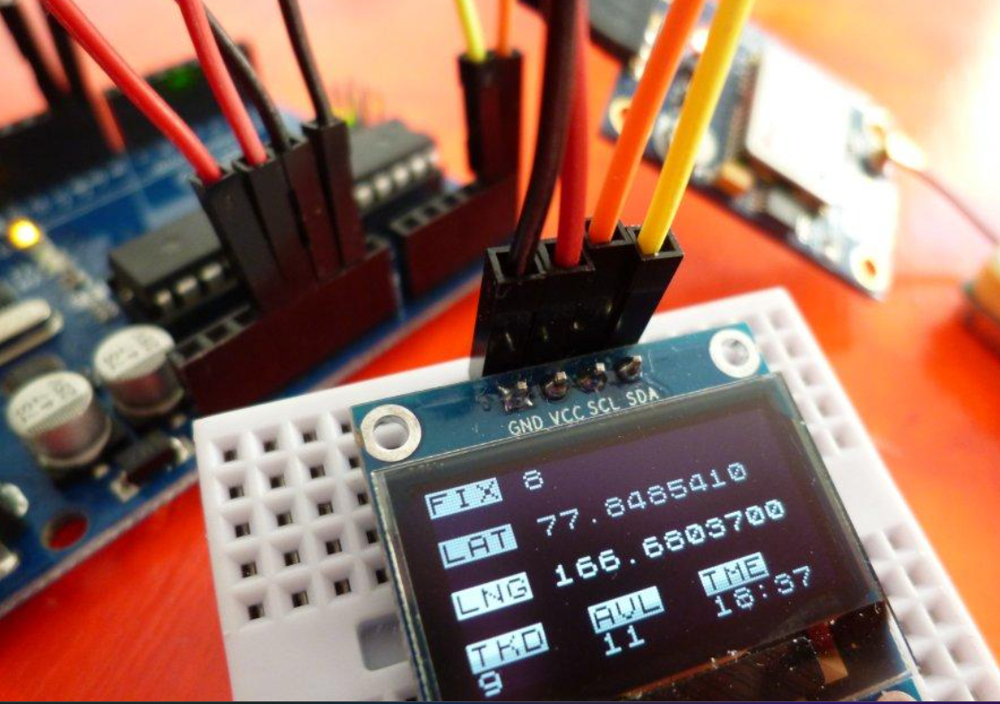
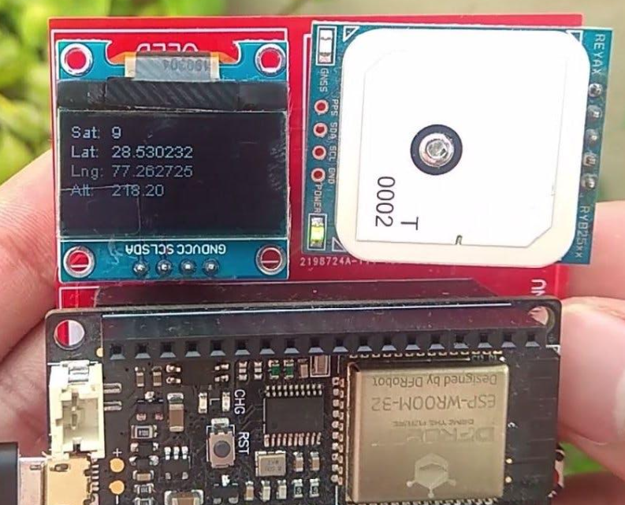
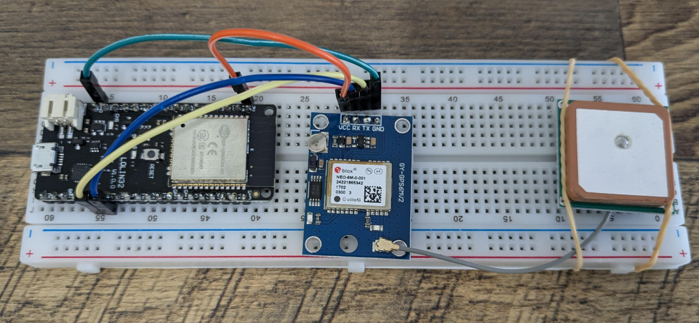
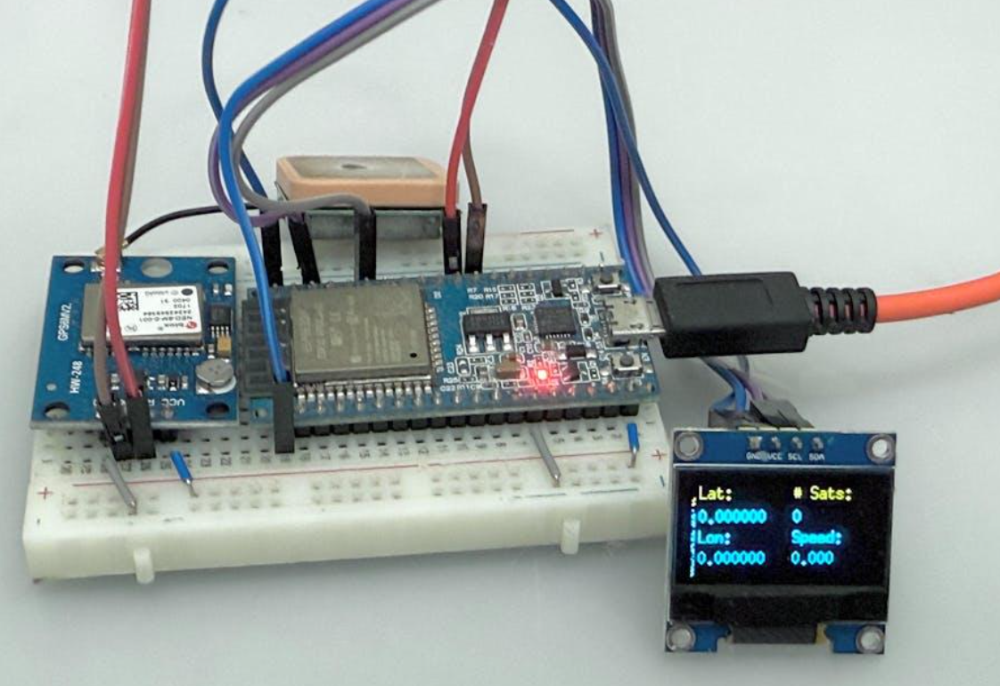

Real-Time GPS Tracking
Receive geographical location information from GPS satellites.
VJAYA ROBOTICS PROJECT
ESP32 GPS PROJECTBuild a real-time GPS tracking system using an ESP32, NEO-6M GPS module and OLED display. The GPS module receives satellite signals and provides geographical coordinates, including latitude, longitude and location information, which are processed by the ESP32 and displayed on the OLED screen.
Explore Project



PROJECT OVERVIEW
This project uses the NEO-6M GPS module to receive geographical location information from GPS satellites. The module communicates with the ESP32 through UART serial communication.
The ESP32 reads and processes GPS information using the GPS module library. The latitude, longitude, satellite information and GPS connection status are displayed on a 128x64 OLED display.
WHAT IT CAN DO
Receive geographical location information from GPS satellites.
Display the current geographical coordinates received from the GPS module.
Display GPS coordinates and connection information on a 128x64 OLED screen.
Communicate between the NEO-6M GPS module and ESP32 using serial communication.
GPS processing and OLED display functions are organized into separate modules.
HARDWARE REQUIREMENTS
SOFTWARE REQUIREMENTS
HOW IT WORKS
GPS / DISPLAY LOGIC
| GPS Information | System Response |
|---|---|
| GPS Data Received | Process incoming GPS information |
| Valid Latitude | Display latitude coordinates |
| Valid Longitude | Display longitude coordinates |
| Satellite Information | Display available satellite count |
| Valid GPS Fix | Display current location |
| No GPS Fix | Display waiting for GPS signal |
| No New GPS Data | Continue checking for incoming data |
PROGRAM STRUCTURE
Main setup and loop for initializing the GPS tracking system.
ESP32 pin assignments, UART settings and OLED configuration.
GPS initialization, serial communication and location data processing.
OLED initialization and GPS information display functions.
PROGRAMMING
Download the GPS Tracking System files from the source folder in this repository.
GPS_TRACKING.ino
Download Code ↓ 📄config.h
Download Code ↓ 📄gps_module.h
Download Code ↓ 📄gps_module.cpp
Download Code ↓ 📄display.h
Download Code ↓ 📄display.cpp
Download Code ↓PROJECT DEMONSTRATION
ESP32 GPS Tracking Demonstration
Add your actual GPS tracking project video, photograph or demonstration link here.IMPORTANT INFORMATION